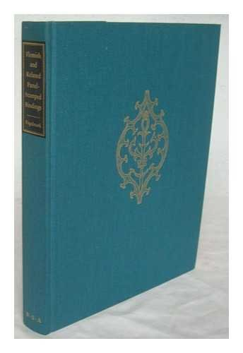

Flemish and Related Panel-Stamped Bindings: Evidence and Principles
Bibliographical Society of America, New York

Brief excerpts from reviews / statements in international press
“Further, the Council that morning had accepted for publication Staffan Fogelmark's revolutionary work …”.
Joan M. Friedman, Papers of the Bibliographical Society of America 82:3, 1988, p. 389.
“Fogelmarks revolutionäre These wird durch das vorgeführte und analysierte Material deutlich und überzeugend belegt.”
Dr. Susanne Rothe, Zeitschrift für Bibliothekswesen und Bibliographie 38:6, 1991, p. 601.
“This is an important, indeed revolutionary, contribution …”.
A.R.A. Hobson, Times Literary Supplement, December 6, 1991, p. 27.
“[…] this is a book of pioneering importance.”
David Pearson, Antiquarian Book Monthly XXI:2, 1994, pp. 28-29.
”Darin besteht die bahnbrechende Bedeutung seines Buches …”. ”Bereits an dieser Stelle wird dem Leser des Buches von Fogelmark der Atem verschlagen.”
Dr. Marianne Rozsondai, Text, Swedish Journal of Bibliography 5:1, 1994, pp. 39-43. (Authorized tr. by Dr. István Hajdú, Bayerische Akademie der Wissenschaften, Munich, of the review in Magyar Könyvszemle 4, 1993, pp. 490-492).
“Dr Fogelmark has done something that is rare in humanities research; he has taken a long-accepted principle … and overturned it — convincingly so.” // “Like so much of the earlier work … overtaken by S. Fogelmark’s revolutionary Flemish and Related Panel-Stamped Bindings (1990).”
Mirjam M. Foot, The Library, 7:1, 2000, p. 204. The Book Collector, 51:4, 2002, pp. 515-16.
“[…] the book … overturns the results of virtually all earlier studies in the field at a stroke. It offers fundamentally new insights … with far-reaching consequences. Fogelmark’s book will undoubtedly remain a ’classic’…”.
Jos M. M. Hermans, Quaerendo 24: I, 1994, pp. 49-52.
“In sum, one may say simply that Fogelmark’s study is revolutionary. This is the first conceptual advance … since the general methodology … was codified a hundred years ago. […] Fogelmark’s Flemish and Related Panel-Stamped Bindings will soon be seen to have earned a place as one of the rare classics …”.
Dr. Paul Needham, Papers of the Bibliographical Society of America 87:4, 1993 (1994), pp. 511-515.
Where to buy
Copies can still be ordered from the author: staffan@fogelmark.org at the price of €100 (postage included).